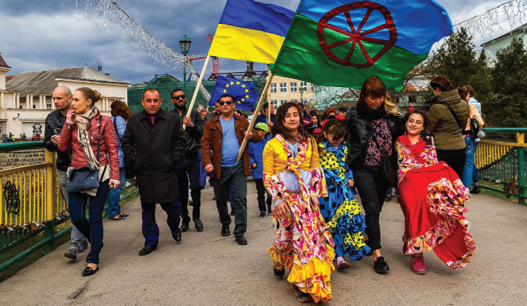

Ромската материална и нематериална култура Ромската култура е част от културното разнообразие на Европа и има дълбоки исторически корени. Изследванията показват, че произходът на ромите се свързва със северозападна Индия, откъдето различни групи започват миграции към Европа между VIII и XI век. В България ромите представляват една от най-големите етнически малцинствени групи и са разпространени в различни региони на страната, като говорят ромски, български или турски език в зависимост от местните условия. Ромската култура включва както материални елементи – традиционни занаяти, носии, музикални инструменти и жилищна култура, така и нематериални елементи – език, музика, традиции, обичаи и социални ценности. В продължение на векове тази култура се е съхранявала главно чрез устна традиция и семейно предаване между поколенията. Материалната култура на ромите се изразява в традиционни занаяти, облекло, музикални инструменти и ежедневни предмети, които отразяват както собствените културни традиции, така и влиянията на обществата, сред които ромите са живели.
• Традиционни занаяти
Ромските занаяти имат дълга традиция както в България, така и в много други части на света. Те са важна част от културната идентичност на ромските общности и често се предават от поколение на поколение в семейството. Тези занаяти включват обработка на метали, дърво, музикални инструменти, търговия и различни видове ръчна изработка. В исторически план ромските общности са известни със своите занаятчийски умения. Сред най-характерните занаяти са: ковачество и обработка на метали; дърводелство и производство на музикални инструменти; калайджийство и ремонт на домакински съдове; музикантство и участие в народни оркестри. Тези професии са били важна част от икономическия живот на ромските общности и често са се предавали от поколение на поколение. Особено място заемат занаятите, практикувани предимно от жени. Сред тях най-разпространени са шиенето, бродерията, изработването на традиционни дрехи, плетенето и изработването на бижута и украшения. Жените често се занимават и с изработване на декоративни предмети, текстил и ръчно тъкани изделия. Тези дейности не само допринасят за семейния доход, но и съхраняват традиционни орнаменти, цветове и символика, характерни за ромската култура. В различни държави по света ромските жени развиват и занаяти като гадаене, билкарство, изработване на амулети и продажба на ръчно направени изделия на пазари и фестивали. Така техният труд съчетава икономическа дейност с опазване на културното наследство.
• Традиционно облекло
Ромското традиционно облекло е важна част от културата на ромските общности в България и по света. То се отличава с ярки цветове, богата украса и разнообразни орнаменти, които отразяват както ромската идентичност, така и влиянията на местните култури в различните страни. Особено впечатляващо е традиционното облекло на жените. То обикновено включва дълги, широки и пъстри поли, блузи с богата бродерия, шалове и кърпи за глава. Често се използват леки и цветни платове, украсени с дантели, пайети или златисти елементи. Жените носят и множество украшения – обеци, гривни, пръстени и монети, които подчертават красотата и социалния статус. В различни части на света ромското женско облекло има свои особености. Например в страните от Балканите то е силно повлияно от местните народни носии, докато в държави от Испания и Румъния се срещат по-различни стилове и декоративни елементи. Въпреки тези различия, характерни остават ярките цветове, свободните форми и богатите украшения. Традиционното ромско облекло, особено това на жените, е символ на културна принадлежност, традиция и самобитност и продължава да се носи при празници, фестивали и семейни събития. В различните региони на Балканите ромската носия се влияе от местните традиции и културни контакти, което води до значително разнообразие в стиловете.
• Музика и музикални инструменти
Традиционната ромска музика е един от най-разпознаваемите елементи от ромската култура в България, Балканите и в много други страни по света. Тя се отличава с богата емоционалност, импровизация и виртуозно изпълнение. Ромските музиканти често свирят на различни инструменти като цигулка, акордеон, кларинет, тъпан и китара, а музиката им съчетава елементи от местния фолклор и ромските традиции. Музиката е централна част от ромската култура. Ромските музиканти са оказали значително влияние върху балканската народна музика. В България ромските оркестри са известни със своите изпълнения на сватби, празници и обществени събития. Жените също имат важна роля в ромската музикална култура. Те се изявяват най-вече като певици и изпълнителки на традиционни песни, които се изпълняват на семейни празници, сватби и други общностни събития. Женското пеене често се отличава с силна емоционалност, богата орнаментика на гласа и свободна интерпретация на мелодията. В различни части на света ромската музика има различни форми. Например в Испания ромската музикална традиция е свързана с фламенкото, а в страните от Централна и Източна Европа ромските оркестри са известни със своето виртуозно инструментално изпълнение. Независимо от регионалните различия, ромската музика остава важен начин за изразяване на чувства, история и културна идентичност, като жените играят значима роля чрез своето пеене и участие в музикалните традиции.
Нематериалната култура обхваща езика, традициите, социалните норми и духовните ценности на ромските общности.
• Език и устна традиция
Ромският език е част от индоевропейското езиково семейство и принадлежи към индоарийската група. Той се е развил след миграцията на ромите от Индия към Европа преди около 1 000 години и е повлиян от контактите с българския, турския, гръцкия и други балкански езици. В България ромите говорят различни варианти на ромския език, които се разделят на няколко основни диалектни групи: калайджийски (балкански) диалект – говори се предимно от калайджийската общност; силно повлияно от българския и турския език; романо-ерлия (ерлия) – един от най-разпространените диалекти, говори се от хората, които са живели в по-градска среда; джипси (гадже) диалект – използва се главно от общности с по-силно влияние на турски и балкански езици; старо-ромски диалекти – срещат се в по-малки, изолирани общности и запазват повече от старите индоарийски черти.
Разпространение:
По данни от последните изследвания, в България ромският език се говори от около 250 000–300 000 души, като точният брой варира заради смесените общности и различията в идентичността. Много от ромите са били двуезични – използват български в училище и официални ситуации, а ромския език – в семейството и общността. В България все по-често се полагат усилия за съхраняване и развитие на ромския език чрез образователни програми, книги и културни инициативи. Особено важен е въпросът за писмеността – в последните десетилетия се работи върху стандартизиране на ромската азбука и създаване на учебни материали на ромски език. Това позволява не само по-широко образование на ромските деца на роден език, но и съхраняване на културното наследство и идентичността на общността. Усилията включват също публикации на ромски книги, вестници и дигитални ресурси, които дават възможност на езика да се използва активно в съвременния живот. Освен това ромската култура се характеризира със силна устна традиция – приказки, песни и легенди, които се предават между поколенията.
• Семейни и социални традиции
Ромските общности традиционно се основават на силни семейни връзки и взаимна подкрепа. Семейството играе централна роля в живота на всеки член – младите се грижат за възрастните, а решенията често се вземат колективно, като се отчитат мнението и авторитетът на по-старите. Сред традициите, които привличат вниманието на околните, са свързани със сватбите – например практиката, известна като „купуване на булка“, която представлява договорено или символично заплащане на семейството на булката от страна на младоженеца или неговото семейство. Тези обичаи често включват множество ритуали, празненства, музика и танци, а жените имат водеща роля в подготовката и провеждането на церемониите. Въпреки че някои от тези практики могат да изглеждат необичайни за хора извън общността, те отразяват ценности като солидарност, уважение към традициите и укрепване на семейните връзки. Семейните традиции на ромите са сложна комбинация от културна идентичност, социални взаимоотношения и предаване на знания и обичаи между поколенията.
• Празници и обичаи
Ромските празници и обичаи са важна част от културната идентичност на ромските общности в България и на Балканите. Те се свързват предимно с семейни и общностни събития като сватби, кръщенета, рожденни дни и големи празници. На такива събирания музиката, танците, традиционните облекла и ритуалите играят централна роля, а жените често участват активно чрез пеене, приготвяне на храна и украса. На Балканите ромите отбелязват и местни празници, като Великден, Коледа и Гергьовден, като към тях добавят специфични обреди – например обредни песни и танци, носене на традиционни носии и специални трапези. Международният ромски ден на 8 април се чества с паради, концерти и културни прояви, които подчертават ромската история, традиции и борбата за равни права. Тези празници дават възможност за споделяне на културното наследство както вътре в общността, така и пред широката публика по света.
Ромската култура в България има много сходства с тази в съседните балкански държави, тъй като ромските общности са били в постоянен контакт помежду си.
• Румъния
Ромската култура в Румъния има дълбоки исторически корени и се проявява в музиката, танците, облеклото, занаяти и семейните традиции на общностите. Музиката и танците са особено характерни – ромските оркестри са известни със своя виртуозен стил, а жените често изпълняват емоционални песни, подобно на традицията в България. Отличителни черти спрямо ромската култура в България включват по-силно влияние на местните румънски фолклорни елементи върху облеклото и музиката, както и различни ритуали при сватби и празници. В Румъния съществуват и специфични диалекти на ромския език, които се различават от тези в България, а някои общности запазват уникални занаяти и обичаи, като обработка на метали или тъкане на традиционни текстили. Въпреки различията, културните ценности като семейна солидарност, гостоприемство и предаване на традициите остават общи за ромите и в двете страни. Много ромски музиканти са допринесли за развитието на традиционната румънска музика и танци.
• Сърбия
В Сърбия ромите са признато национално малцинство. Ромската култура в Сърбия е жива и разнообразна, като музиката заема централно място в живота на общностите. Традиционната ромска музика в Сърбия е известна с енергични ритми, виртуозни инструментални изпълнения и силно емоционално пеене, като жените често изпълняват песни при семейни и обществено значими празници. Един от най-известните примери за популяризация на ромската музика е Горан Брегович, който интегрира ромски мелодии и ритми в съвременни оркестрови композиции и филмови саундтраци. Отличителното за ромската култура в Сърбия спрямо България е по-силното влияние на балканската оркестрова музика и инструменталните традиции, както и специфичните диалекти и локални обичаи при празници и сватби. Въпреки това ценностите като семейна солидарност, почит към старите поколения и богатата устна традиция остават сходни с българската ромска култура.
• Северна Македония и Гърция
Ромската култура в Северна Македония и Гърция е богата на музика, танци, занаяти и семейни традиции, като силната общностна връзка и гостоприемството остават централни ценности. В Северна Македония ромската музика е тясно свързана с местния македонски фолклор и се изпълнява както с цигулка и гъдулка, така и с акордеон и ударни инструменти, като жените играят важна роля в пеенето и ритуалните песни. В Гърция ромите са особено известни със своята танцова култура и участие в музикални фестивали, а жените активно участват в традиционни празненства и изработването на облекло и украси. Сравнено с България, ромската култура в тези страни се отличава с по-силно влияние на местните национални фолклори и различни диалекти на ромския език. Освен това, някои обичаи, свързани със сватби, празници и семейни ритуали, имат уникални регионални вариации, докато основните ценности като семейна солидарност и уважение към предците остават общи.
Общи характеристики и подкрепа
Ромската култура по света се отличава с богата музика, танци, занаяти, устни традиции и силни семейни връзки. Независимо от държавата, ромите ценят солидарността в семейството и общността, уважението към по-старите и предаването на традициите от поколение на поколение. Музиката и танците са винаги централни – често импровизирани, емоционални и пъстри, а жените имат важна роля в пеенето, приготвянето на храна и обредите. Ромските общности съхраняват занаяти като шиене, бродерия, изработка на бижута и търговия, а традиционното облекло е ярко и богато украсено. Празници и ритуали отбелязват важни моменти в живота – сватби, кръщенета, семейни събирания и международния ромски ден. Въпреки различията в различните държави, културните ценности като идентичност, творчество и гостоприемство остават общи за ромите по целия свят. В България и Европа съществуват различни организации и съюзи на ромите, които се стремят да защитават правата на ромската общност, да популяризират културата и езика, както и да подпомагат социалното и икономическо развитие на ромите.
България:
• Национален съвет на ромите в България – координира инициативи за образование, култура и права на ромите.
• Фондация „Рома“ – работи за социална интеграция, образование и културно развитие.
• Център за развитие на ромската общност – подкрепя проекти за младежи, култура и обществено участие.
Европа:
• European Roma Rights Centre (ERRC) – международна организация, която защитава правата на ромите и наблюдава дискриминацията.
• European Roma and Travellers Forum (ERTF) – европейска платформа за диалог между ромски организации и институции на ЕС.
• Roma Education Fund (REF) – подпомага образование и социална интеграция на ромите в Европа.
• Roma Union of Europe – координира културни и социални инициативи на ромски организации от различни държави.
Тези съюзи и организации играят ключова роля за защита на ромските права, запазване на културата и подобряване на възможностите за образование и трудова реализация на ромите както в България, така и в цяла Европа.
Предизвикателства и съвременни тенденции
В съвременността ромската култура се сблъсква с редица предизвикателства, включително социална маргинализация, бедност и асимилация. В същото време се наблюдава нарастващ интерес към съхраняването и популяризирането на ромското културно наследство. В много държави се организират културни фестивали, музикални събития и образователни програми, които представят ромската култура като важна част от европейското културно разнообразие. Ромската материална и нематериална култура представлява значима част от културното наследство на България и Балканите. Традиционните занаяти, музиката, обичаите и семейните ценности са съхранили ромската идентичност през вековете. Сравнението със съседните държави показва, че ромската култура има общи корени и характеристики в целия регион, но същевременно се адаптира към местните условия и културни влияния. Съхраняването и популяризирането на ромската култура е важно не само за ромската общност, но и за развитието на културното многообразие и взаимното разбирателство в съвременна Европа.